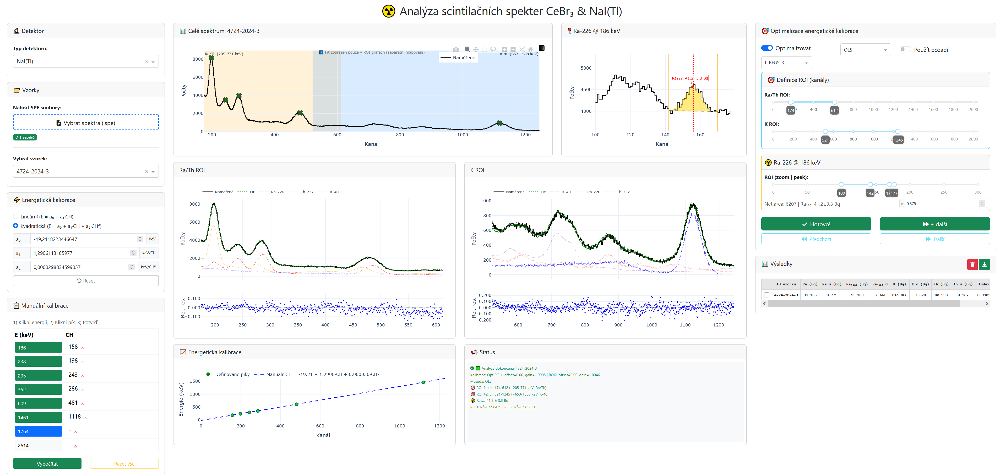

Metody pokročilé scintilační spektrometrie pro měření obsahu radionuklidů ve vzorcích stavebního materiálu
Software pro analýzu γ-spekter z scintilačních detektorů NaI(Tl) a CeBr₃, umožňující rychlé stanovení aktivit radionuklidů 226Ra, 232Th a 40K ve vzorcích stavebních materiálů metodou spektrální dekompozice.
Rozklad spektra na spektrální komponenty pomocí NNLS/OLS regrese
Automatická korekce energetické škály (drift kompenzace)
Separátní fit pro Ra/Th a K pro vyšší stabilitu
Hustotně závislá korekce matricového efektu
Dash/Plotly rozhraní pro interaktivní kalibraci a analýzu spekter
Porovnání s 74 referenčními měřeními, RMSE redukce 40-67% → výsledky
